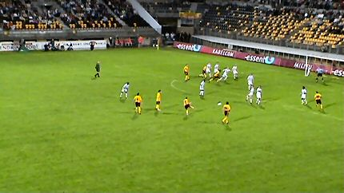

|
Roda JC - Vitesse (2-3) 13 augustus 2004 |
Jochen verkocht sjaals aan Texaanse meiden. Ook de Rodasong
van
Dogman werd aangeprezen. Roda opende het seizoen helaas
met de
kwijlplaat van Bonné.
Roda JC
- Vitesse (2-3) 13 augustus 2004
Jochen verkocht sjaals aan Texaanse meiden. Ook de Rodasong
van
Dogman werd aangeprezen. Roda opende het seizoen helaas
met de
kwijlplaat van Bonné.
De RML-tref bij Z16.
Een nieuw, mooi spandoek op west.
De sfeer op de diverse tribunes was goed. Tussen west en zuid
was
er
zelfs interactie: R-J-C.....R-J-C.....
Roda JC-Vitesse opent de competitie seizoen 2004-2005.
Dit moet zijn: "We zijn er nog". Alleen kwamen er
deze keer zo'n
800 supporters minder.
Cristiano opent de score in de 26e min.
Roda kan geen voorsprong vasthouden; na vijf minuten is het
alweer
gelijk door een doelpunt van Hofs.

De streeeeeep van Bodnar. Hij stond bekend om zijn
vernietigende
vrijetrappen. Vandaag was duidelijk waarom: 2-1, 40'.
De Hongaar wordt door Luinge geconfronteerd met de
kinderachtige
regel
dat het shirt niet uitgetrokken mag worden: geel!
Hofs maakt weer gelijk, 67'.
Kujovic krijgt een bal niet onder controle. Uit de rebound
scoort
Janssen
2-3, 85'.
In deze slotfase ontstaat er enige beroering bij de
scheidingswand
tussen
het gastenvak en zuid.
Terwijl de Kick Off al nagenoeg leeg is verschijnen Van Dijk en
Lachambre.
De spelers betreden niet eens het home en blijven in
de omloop.....
Roda verliest voor het eerst sinds tijden de
openingswedstrijd. De
ploeg
verspeelt meteen vertrouwen en Vloets krediet raakt snel op!